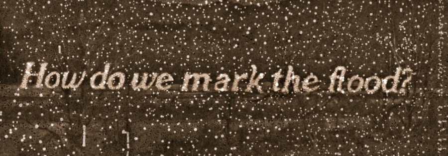

“Lost in the Flood”: Photochemical Traces of Extreme Weather
A night of short films with a live cinema performance by Tristan Turner, Isaac King, and Agis Shaw, and an introduction by chemist Dr. Shelby Hatch.
“Lost in the Flood” explores the cultural and material impacts of flooding and contamination through the vulnerable medium of photochemical film. In each of the three titles in this program, the celluloid medium registers a different dimension of the destructive force of extreme weather. Sofía Gallisá Muriente examines the corrosive effects of salt on 16mm to process the impact of Hurricane Maria on the island of Puerto Rico. Late New Orleans-based filmmaker Helen Hill’s Super 8 home movies were damaged in Hurricane Katrina; blown up and preserved in 16mm, the waterlogged footage of Big Easy life speaks to both endurance and loss. Drawing on 35mm prints from the Jones Film Collection at Southern Methodist University, film artist Michael A. Morris manipulates scenes of floods and tempests from old Hollywood to dramatize the challenges of archival preservation against the deluge of time in ARK (2018, 35mm).
The program’s centerpiece is SWANNANOAN SILT (2025), a live two-channel cinema performance by filmmakers Tristan Turner and Isaac King accompanied by musician Agis Shaw. In September 2024, Turner and King set out to document the impacts of Hurricane Helene, which caused massive flooding, landslides, and environmental hazards throughout the greater Appalachian region. Working with 16mm motion picture and 35mm slide film, Turner and King captured images of devastation and community resilience, pushed to the limits of legibility by processing their images in the contaminated waters of the Swannanoa and French Broad Rivers.
The program will feature an introduction by Dr. Shelby Hatch, Associate Professor of Instruction in the Department of Chemistry at Northwestern and a scientist researching the impact of heavy metal contamination in Chicago.
Films screened:
ASIMILAR Y DESTRUIR I (Sofía Gallisá Muriente, 2018, 3 min, 16mm-to-digital, courtesy of the artist)
HELEN HILL HOME MOVIE REEL (Helen Hill, 2000-2005, 11 min, Super-8-to-16mm, print courtesy of the Harvard Film Archive)
ARK (Michael Morris, 2018, 7 min, 35mm, print courtesy of Canyon Cinema)